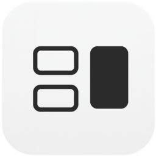

Mac Split Screen,
More Intuitive Than Ever.
Snap windows to halves or thirds instantly.
Organize your Mac with just keyboard shortcuts.
SimplePallet is a free (JPY 0) Mac window manager that places windows in left or right halves, one-third, and two-thirds layouts using only the keyboard. Its primary Cmd + Arrow controls use fewer keys than macOS's built-in Fn + Control + Arrow shortcuts, and it supports Apple Silicon and Intel Macs running macOS 13 or later.
Version 1.2 | Apple Silicon & Intel
Who SimplePallet is for
Some people only need macOS's built-in tiling. SimplePallet is for people who want fewer keys for common placements or regularly use one-third and two-thirds widths.
- You arrange Mac windows side by side throughout the day
- You prefer a keyboard-only workflow
- You want a simpler alternative to
Fn + Control + Arrow - You use one-third or two-thirds layouts for documents and chat
- You want a free Mac window manager
- You value memorable controls over a long feature list
How it differs from built-in macOS tiling
macOS already includes window-tiling shortcuts: Fn + Control + Left/Right Arrow places the active window on the left or right half. SimplePallet shortens that action to Cmd + Left/Right Arrow and adds one-third and two-thirds placements.
Your Windows,
At Your Fingertips.

Magical Snapping Experience.
Forget dragging windows. Just press a shortcut, and your windows snap into place perfectly.
This is the new standard for Mac window management.
- ⌘ ← Left Half
- ⌘ → Right Half
- ⌘ ↑ Maximize
- ⌥ ⌘ ← Left Third
- ⌥ ⌘ ↑ Center Third
- ⌥ ⌘ → Right Third
- ⌃ ⌘ ← Left Two-Thirds
- ⌃ ⌘ → Right Two-Thirds
Lectures & Notes.
Side by Side, Efficiently.
Watch a lecture on the left, take notes on the right.
Achieve the perfect "Mac Split Screen" setup in seconds.
Getting Started is Simple.
Download
Click the button to
save the app.
Permission
Open the app and enable
Accessibility in Settings.
Done
Just use shortcuts to
organize freely.
Version 1.2 | macOS 13.0+ | Apple Silicon & Intel
🪟 Flexible Layouts
Half screen, thirds, or full screen.
The simplest and most powerful answer to Mac window management.
⌨️ Shortcut Control
Never leave your keyboard.
Master Mac split screen commands for a professional workflow.
🌍 Global Support
Supports English, Japanese, Korean, and Chinese.
A comfortable experience for Mac users worldwide.
Mac Split Screen Tips
| Feature | Built-in macOS tiling | SimplePallet |
|---|---|---|
| Left/right half shortcut | Fn + Control + ← / → |
⌘ + ← / → |
| Mouse Required | No ✓ | No ✓ |
| One-third width | Not listed in Apple's shortcut guide | ⌥ + ⌘ + ← / ↑ / → |
| Two-thirds width | Not listed in Apple's shortcut guide | ⌃ + ⌘ + ← / → |
| Best for | People who only need built-in half-screen tiling | People who want fewer keys and third-based layouts |
Source for built-in shortcuts: Apple's Mac window tiling icons and keyboard shortcuts (checked August 16, 2026).
Frequently asked questions
Fn + Control + Left/Right Arrow, while SimplePallet uses Cmd + Left/Right Arrow to place the active window on either half.Developer and updates
SimplePallet is a macOS app developed by Yuki Koike. Its source code, release history, and downloads are available on GitHub.
- Latest version: 1.2, published August 14, 2026
- SimplePallet v1.2 release notes
- Privacy policy